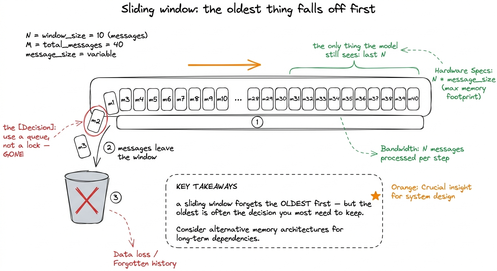
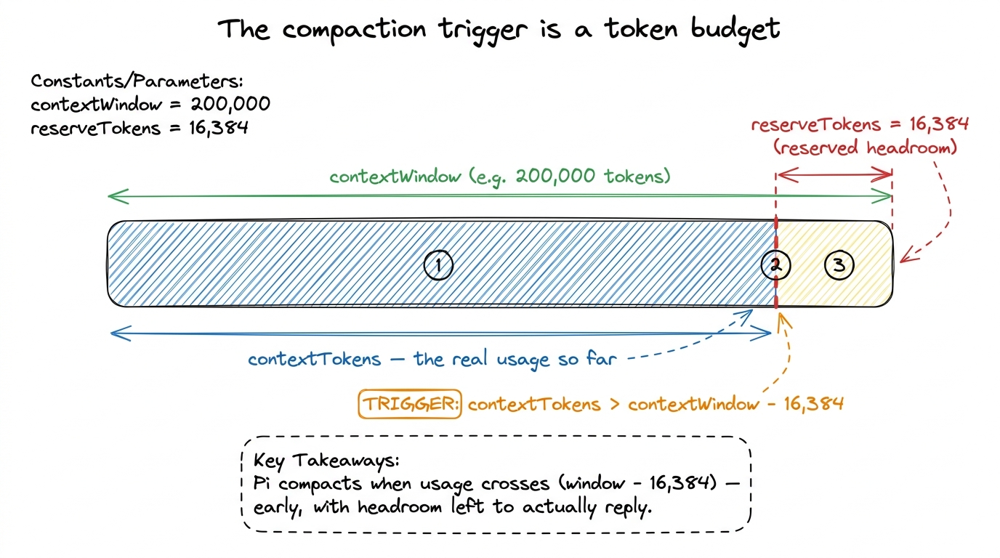
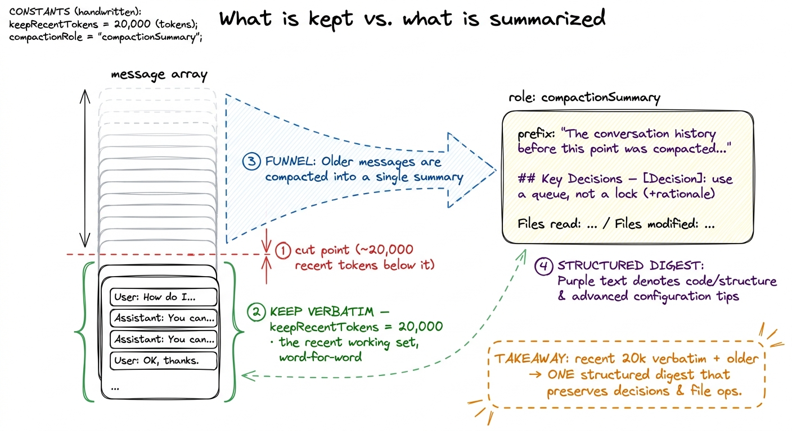
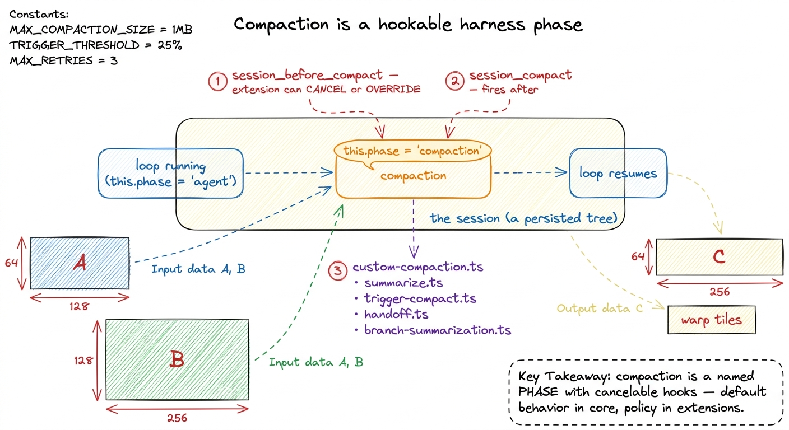

How Pi manages context (not 'the last three messages') DEEP
There is a comfortable story people tell about how a coding agent stays inside its context window: "it just keeps the last few messages and throws the rest away." It is a tidy story, it is what most teaching harnesses actually do, and — for the harness whose real source we are reading in this section — it is wrong. Pi does not keep the last three messages. Pi does not keep the last thirty. When the conversation gets heavy, Pi reads the provider's real token bill, decides it is close to the ceiling, keeps a fat recent window verbatim, and summarizes everything older into a single structured digest that remembers why the agent did what it did. This chapter is that correction, read straight out of packages/agent/src/harness/compaction/compaction.ts.
If you have read the context window as a resource and compaction and summarization conceptually, this is where you see a production harness make those ideas concrete — and where you see it diverge, sharply, from the simpler thing Vercel Academy teaches.
The simple thing first: a sliding window
Vercel Academy's TeensyCode (Module 5) reaches for the obvious tool. It writes a pruneMessages function: walk the message array, drop the oldest and stalest tool results, keep the tail. It is a sliding window — cheap, deterministic, and easy to reason about. When the array gets too long, the front falls off a conveyor belt.1 This is genuinely the right first lesson. A sliding window is the thing you should build to feel the problem — it works, it is ten lines, and it teaches you that context is a budget you must actively spend. Pi's approach is what you graduate to once you have felt what the window loses.
And for a while it works. But feel where it breaks. Forty turns ago the agent decided to use a queue instead of a lock, and wrote down its reasoning. Thirty-eight turns of tool output later, that decision has slid off the belt. The agent now re-derives it, or worse, quietly contradicts it. A sliding window forgets the oldest things first — but in a long coding task the oldest things are often the load-bearing decisions.

figure rendering · A pure sliding window drops the front of the conversation. In a long tPi's trigger: a real token budget, not a message count
Open compaction.ts and the first thing you notice is that Pi does not count messages at all. It counts tokens against the model's context window, and it fires on a budget:
export function shouldCompact(contextTokens, contextWindow, settings): boolean {
return contextTokens > contextWindow - settings.reserveTokens;
}Read it plainly: compact when the tokens we are carrying climb to within reserveTokens of the model's ceiling. And the defaults are not vague — they are named constants:
export const DEFAULT_COMPACTION_SETTINGS = {
enabled: true,
reserveTokens: 16384,
keepRecentTokens: 20000,
};So the breakpoint is exact. If the model's window is, say, 200k tokens, compaction triggers when usage crosses 200,000 − 16,384. That 16384-token band is reserved headroom — room for the next assistant turn to actually be generated after we compact, so we never wedge ourselves against the ceiling with no space to reply.2 This is the difference between "trigger when we run out" and "trigger while we still have a comfortable 16k of runway." Pi compacts early, on purpose, so the very turn that does the compaction still has room to breathe.

figure rendering · Compaction is budget-triggered: it fires when real token usage climbsWhere the token number comes from (this is the good part)
A sliding window can get away with a rough character estimate, because it is only deciding which messages to drop. Pi is deciding when to trigger an expensive summarization pass, so it wants the number to be right. And it has a source most homemade harnesses ignore: the provider already told us.
Every assistant message that comes back from the API carries a usage block — the provider's own accounting of exactly how many tokens that turn cost. Pi reads it directly:
export function calculateContextTokens(usage: Usage): number {
return usage.totalTokens || (input + output + cacheRead + cacheWrite);
}That is not a guess. That is the model provider's real, cache-aware token count — including the tokens that were served from cache — off the most recent assistant message. Pi takes that authoritative number and then adds estimateContextTokens for only the trailing messages that arrived after that last billed turn (the ones the provider hasn't accounted for yet).3 This is why the trigger is trustworthy across a long, cache-heavy session. The bulk of the count is the provider's exact figure; the estimate covers only the thin tail since the last round-trip. Compare a naive text.length / 4 estimate over the whole array, which drifts badly once caching and tool results are in play. Exact where it can be, estimated only where it must be.
What compaction actually does: keep a window and a digest
Now the payoff. When shouldCompact returns true, Pi does not slide. It splits the conversation into two parts and treats them completely differently.
The recent part stays verbatim. Pi walks backward from the newest message accumulating tokens until it has kept about keepRecentTokens = 20,000 tokens of the most recent conversation, untouched. This is the working set — the last stretch of thinking, tool calls, and results, preserved word-for-word.
Everything older becomes one structured summary. The rest is compressed into a single message with role: "compactionSummary", prefixed with COMPACTION_SUMMARY_PREFIX — "The conversation history before this point was compacted into the following summary:". And the crucial thing is that this summary is not a vague paragraph of "we talked about the auth module." It is templated and structured. It carries a ## Key Decisions section that preserves each **[Decision]** with its rationale, and it carries an explicit inventory of file operations — which files were read versus which were modified — extracted by extractFileOperations and rendered by formatFileOperations.
So the two things a sliding window loses first — why choices were made, and which files were touched — are exactly the two things Pi's summary is built to keep.

figure rendering · Compaction keeps roughly 20,000 recent tokens verbatim and folds everycompactionSummary — decisions and file-read/-modified lists survive.The result is qualitatively different from a window. Pi's agent, forty turns deep, still has the recent 20k in full and a durable digest telling it "you decided X because Y, you read these files, you modified those." It does not re-derive the queue-vs-lock decision, because the decision was written into the summary, not dropped off a belt.
Compaction is a first-class phase, not a hidden hack
One more thing the source makes clear: this is not a quiet utility function bolted onto the loop. Compaction is a real phase of the harness. In agent-harness.ts the runtime sets this.phase = "compaction" while it happens, which means the rest of the system knows the agent is compacting, not thinking.
And because it is a phase, it is fully hookable. Before Pi compacts it emits session_before_compact — an event an extension can cancel (to keep the raw history a bit longer) or override with its own compaction result entirely. After it finishes it emits session_compact. Pi ships example extensions that live in exactly this seam — custom-compaction.ts, summarize.ts, trigger-compact.ts, handoff.ts — and branch-summarization.ts for summarizing side branches of the session tree.4 This is the recurring shape of the whole harness, covered in pi internals: a small deterministic core exposes named phases and events, and policy — how aggressively to compact, what the summary should emphasize, whether to hand off instead — lives in swappable extensions. The window logic is core; the judgment is yours. The default is good; the mechanism is open.

figure rendering · Compaction is a named phase (`this.phase = "compaction"`) bracketed bythis.phase = "compaction") bracketed by the cancelable session_before_compact and the session_compact events, so extensions can replace or veto the default.The one-line contrast to carry forward
Put the two harnesses side by side and the difference is a single sentence. A sliding window keeps a recent window and nothing else — it forgets the oldest first. Pi keeps a recent window and a durable, structured digest of everything before it — so it forgets almost nothing that mattered.
That is the whole correction. "The last three messages" is the intuition of a harness that only has a window. A production harness has a window and a memory of why, triggered on the provider's real token bill, sitting in packages/agent/src/harness/compaction/compaction.ts for you to read line by line. Next, see the other half of staying cheap over a long session — how Pi caches almost everything it re-sends — in the cache-control deep-dive, or step back to why "just call the API" fails for the pressure that makes all of this necessary.